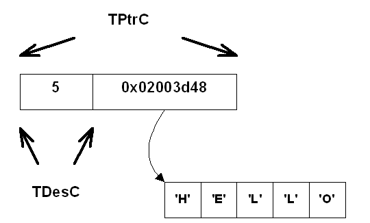
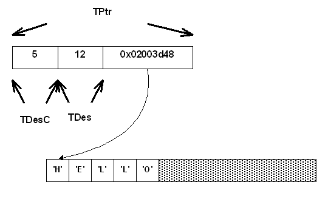

|
| |
A pointer descriptor represents data which can live in ROM or RAM and this location is separate from the pointer descriptor object itself.
A pointer descriptor is an instance of a class that encapsulates a pointer to the location of the data.
A pointer descriptor comes in two forms:
a non-modifiable pointer descriptor.
a modifiable pointer descriptor.
The data represented by a non-modifiable pointer descriptor can be accessed, but not changed, through this descriptor.
Data is accessed through functions provided by the base class.
A non-modifiable pointer descriptor is supplied in two variants:
the 16 bit variant, a TPtrC16, for representing Unicode strings.
the 8 bit variant, a TPtrC8, for representing non-Unicode strings and binary data.
There is also a build independent type, TPtrC. This is the type which is most commonly used in program code; the appropriate variant is selected at build time.
An explicit 8 bit variant is chosen for binary data. The explicit 16 bit variant is rarely used.
The base class, TDesC, contains a data member which holds the length of the data. The following drawing shows the layout of a TPtrC object for a string of five characters representing the English word "Hello".

|
The data represented by a modifiable pointer descriptor can be both accessed and changed through this descriptor.
The length of the data can vary between zero and the maximum length. The maximum length of the descriptor is set by the constructor. When the length of the data is less than the maximum, a portion of the data area represented by the descriptor is unused.
Data is accessed and modified through functions provided by the base classes.
A modifiable pointer descriptor is supplied in two variants:
the 16 bit variant, a TPtr16, for representing Unicode strings.
the 8 bit variant, a TPtr8, for representing non-Unicode strings and binary data.
There is also a build independent type, TPtr. This is the type which is most commonly used in program code; the appropriate variant is selected at build time.
An explicit 8 bit variant is chosen for binary data. The explicit 16 bit variant is rarely used.
The base class TDesC, contains a data member that holds the length of the data. The base class TDes, contains a data member that holds the maximum length of the data. The following drawing shows the layout of a TPtr object for a string of five characters representing the English word "Hello". The maximum length to be represented by the descriptor is 12.

Copyright ©2002 Symbian Ltd. 6.1-00174 |
|